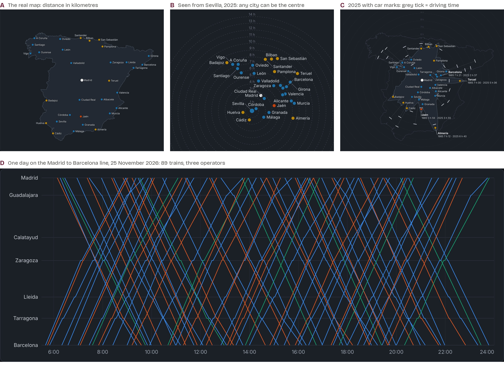
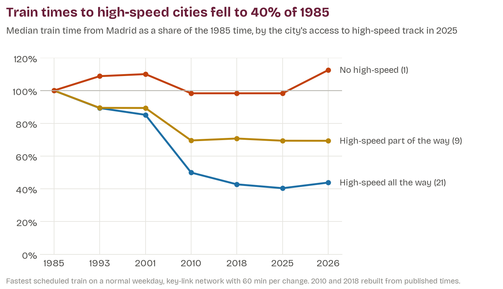
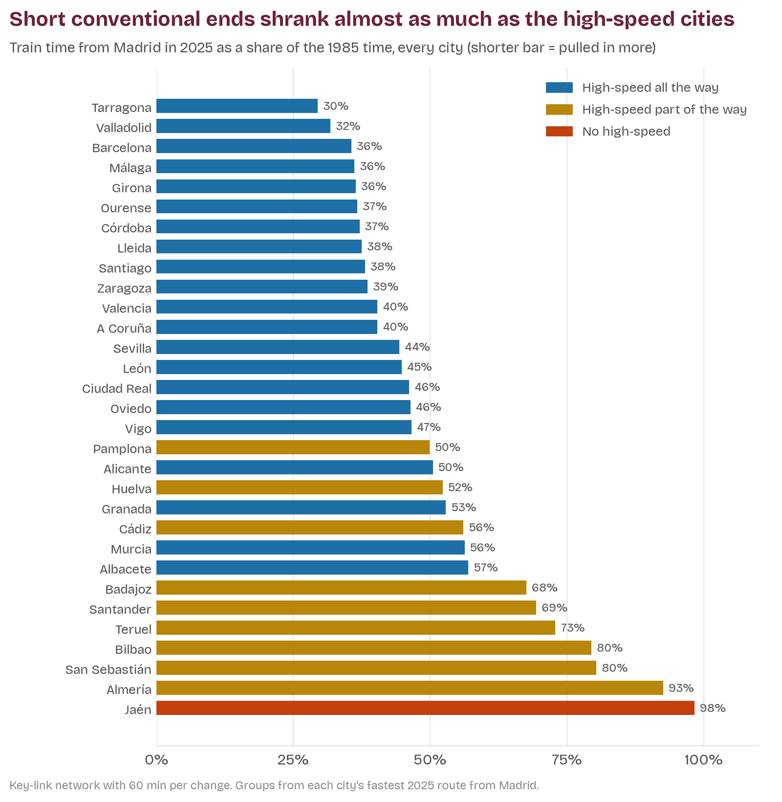
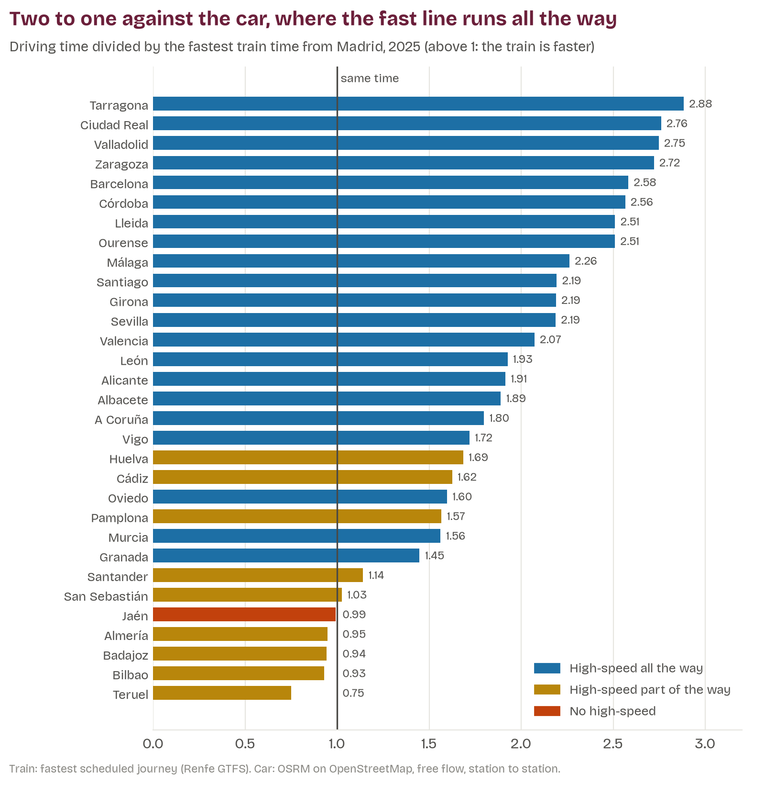

The question
High-speed rail changes a country's geography in time rather than in kilometres. Madrid to Barcelona took over seven hours by the fastest train in 1985 and under three in 2025. But a network reaches some cities and not others, and the ones it misses can end up relatively further away than before. Spain is the clearest case in Europe: a large, mostly radial network centred on Madrid, built in stages from 1992, with gaps that are well known in Spain but rarely shown.
I wanted to measure the change for every large mainland city in one consistent way, show it as a map that shrinks where the trains got faster, and test it two ways: against the car on today's roads, and on the busiest line, Madrid to Barcelona, which three operators have shared since 2022 and which was slowed by safety restrictions in 2026.
The data
| What | Source | Period |
|---|---|---|
| Renfe timetables (GTFS): high-speed, long-distance and regional trains | Renfe open data; archived copy of 18 Dec 2025 from the Mobility Database | Wed 14 Jan 2026 (the "2025" year); Wed 25 Nov 2026 |
| Historical timetables: fastest train on about 70 key links | Renfe timetable guides, scanned by the Biblioteca Ferroviaria (Fundación de los Ferrocarriles Españoles) | 1985, 1993, 2001 |
| 2010 and 2018: the same key links, rebuilt | 2025 links, changed only where a line opened, from published opening times and time savings | 2010, 2018 |
| Ouigo and Iryo timetables (GTFS) | Ouigo: National Access Point (via the Mobility Database); Iryo: community feed by Clément Desouche, built from iryo.eu | Wed 25 Nov 2026 |
| Driving times between the 32 stations | OSRM routing on OpenStreetMap (FOSSGIS server); checked against RACE route pages | Fetched 20 Nov 2026 |
| Coastline; kilometre points on the Madrid to Barcelona line | Natural Earth 1:10 million; Wikipedia route diagram |
The measure is the fastest scheduled train on a normal weekday, station to station. For the map, every year uses the same simple network of key links (Madrid to each city, plus cross-country links), with 60 minutes added for each change of train; on the 2025 timetable this matches the full timetable answer with a median error of about zero, and 64% of city pairs within 30 minutes. The comparison with the car uses the full 2025 and 2026 timetables. 2010 and 2018 are reconstructions, and every rebuilt link says so in its data file; where a time is derived rather than published, it is marked as an estimate.
Cities are grouped by their access to high-speed track in 2025, from the fastest route from Madrid checked train by train: all the way (21 cities), part of the way, with a conventional line at the end (9), and none (Jaén).
One page, eleven notebooks
| Part | What it answers |
|---|---|
| Time map | How far each city is from Madrid by train, year by year from 1985 to 2026: the map morphs between years, with callouts for four cities and a table of every time. |
| Any city as the centre | Tap a city to see the map from there, with hour rings; a map can be exact only from its centre, because most trips between two other cities still pass through Madrid. |
| Compare with car | In 2025 and 2026, a grey mark on each city's direction at its driving time, and a count of where the train wins. |
| One day, Madrid to Barcelona | All 89 trains of Renfe, Iryo and Ouigo on Wednesday 25 November 2026 as a Marey diagram, with each train's times and stops, filters and a table. |
| Notebooks (Python) | 00 to 02 load Renfe's timetables and compute times; 03 builds the key links for every year; 04 and 05 make the map and stretch the coast; 06 writes the page data; 07 compares with the car; 08 and 09 build the Madrid to Barcelona day; 10 makes the charts below. |

What the data shows
Train times to high-speed cities fell to 40% of 1985
Most of the change came in two steps. The Sevilla line of 1992 pulled Andalusia in, and between 2001 and 2010 the lines to Valladolid, Málaga, Barcelona and Valencia halved the times for the high-speed group (from 85% to 50% of 1985). Galicia, Murcia and Asturias followed after 2018. By 2025 the cities pulled in most were Tarragona (30% of the 1985 time), Valladolid (32%), Barcelona and Málaga (36%). The cities reached only part of the way stopped gaining after 2010, at about 70%. Jaén, on a conventional line all the way, was at 98% in 2025: 3 h 55 against 3 h 59 in 1985.

How far the fast line reaches matters, not only whether it is there
The middle group is not one group. Cities where the conventional line at the end is short shrank almost as much as some high-speed cities: Pamplona to 50% of its 1985 time, Huelva 52%, Cádiz 56%, close to Alicante (50%) and Granada (53%). Where the conventional part is long, the gain is small: Bilbao and San Sebastián 80%, Almería 93%. Teruel (73%) is reached by changing trains at Zaragoza. This is a pattern in nine cities, not a measured relationship: I did not measure the length of each conventional end.

Two to one against the car, where the fast line runs all the way
From Madrid, the fastest train beats free-flowing traffic to 26 of 31 cities. Where high-speed track runs all the way, the drive takes over twice as long (Tarragona 2.88 times, Barcelona 2.58). Where it runs part of the way, train and car are about level, and the car is faster to Teruel (the train takes 1.33 times as long), Bilbao, Badajoz, Almería and, by a minute or two, Jaén. Across all 496 city pairs the train is faster for 315 (64%): for 78% of pairs with a direct train, but only 58% where a change is needed, and it is weakest for trips of two to four hours by car. Adding 30 minutes to every train trip for getting to the station, and a 20-minute break for every two hours of driving, gives 27 of 31 cities from Madrid; scaling the car times to RACE's published times, which are about 5% faster than OSRM's, gives 25.

2026: the busiest line, slower for every operator
After the Adamuz accident in January 2026, Adif set temporary speed restrictions on several high-speed lines, and from February it agreed with Renfe, Iryo and Ouigo to add about 25 minutes to Madrid to Barcelona until at least the end of the year. The timetables show exactly that: the fastest train went from 2 h 37 to 3 h 02 and Renfe's typical train from 2 h 53 to 3 h 17. On the map, the 2026 frame stretches the Barcelona line back out (Girona +35 minutes, Barcelona +25, Zaragoza +17), and Jaén, where works also closed the line to Córdoba, is slower than in 1985 (113%). The train still beats the car to Barcelona, but by 2.23 times instead of 2.58.
The line itself is busy and shared. On Wednesday 25 November, 89 trains run between Madrid and Barcelona: Renfe 51, Iryo 28 and Ouigo 10, so the two newer operators run 43% of them. All three share the same track and the same restrictions, and their typical trip takes the same time, 3 h 17. At the busiest times trains leave Madrid four minutes apart, and 17 times a day a later train arrives before an earlier one that stops more often.
| Madrid to Barcelona | 14 Jan 2026 | 25 Nov 2026 |
|---|---|---|
| Fastest train | 2 h 37 | 3 h 02 |
| Renfe's typical (median) train | 2 h 53 | 3 h 17 |
| Average speed of the fastest train | 237 km/h | 205 km/h |
| Car time / fastest train time | 2.58 | 2.23 |
The line is due to be renewed from 2027, starting between Madrid and Calatayud; in November 2026 the government ruled out closing it during the works.
Problems in the data, and how they were handled
- No timetable files before 2025. Renfe's open timetables are archived only from late 2025. The 1985, 1993 and 2001 key links were typed from scanned timetable guides and spot-checked; 2010 and 2018 were rebuilt from 2025 by changing only links whose line changed. The single estimate that matters most, Madrid to Barcelona in 2010, moves 42 of 496 city pairs by 10 minutes or more if changed.
- Newer is not always faster. Some 2025 times are slower than the best of earlier years (Madrid to Sevilla 2 h 38 against 2 h 15 in 2018), because of more stops and works. 2018 uses the published best times, and a 2001 express is kept on a line that did not change, so no city looks falsely slower in 2010.
- Gaps in the guides. The 2001 guide lists long-distance trains only: 11 of its 68 links are carried over from 1993 or 1985 and marked. Narrow-gauge lines on the north coast (Bilbao to Santander and to San Sebastián) are not in Renfe's data and were added by hand.
- Cities without a train. Granada had no train from 2015 to 2019 (AVE plus a Renfe bus in 2018), and in 2026 Córdoba to Jaén is a replacement bus while the line is closed for works. Both count, as Renfe ticketed connections, and are marked.
- A flat map cannot be exact. Trips between two outer cities mostly pass through Madrid, so on the Madrid map they look a median of about two hours shorter than they are. The map is therefore exact only from its centre, and any city can be made the centre. The stretched coastline is a backdrop; only the cities are measured.
- No open Iryo timetable. Iryo publishes no open feed, and it is not on Spain's National Access Point. I used a community feed and checked it against ticket listings: on Wednesday 2 December all 28 Iryo trains matched to the minute, and on 25 November every train on sale matched (three nonstop trains were not on sale that day, probably sold out).
- Small traps in the timetable files. Iryo calls the station "Madrid Atocha" where Renfe and Ouigo say "Puerta de Atocha" (the first run found no Iryo trains), Renfe lists 12 trains twice under the same number and times, and the archived file spells station names differently again. Stations are now matched by code where possible, and counts were checked against ticket listings: Renfe 25 of 25 and Ouigo 5 of 5 departures from Madrid.
Limits
The fastest scheduled train is a best case: it says nothing about how often trains run, what they cost, how punctual they are or how long it takes to reach the station. One weekday stands for each year, and the historical years rest on about 70 key links with a fixed 60 minutes per change rather than on full timetables. The car times assume free-flowing traffic and no parking. Thirty-two cities leave out smaller towns, where losing a conventional service can matter more than gaining a fast one. The 2026 times reflect temporary restrictions and works, not a permanent state.
Where this could be useful
- Transport planners and regional governments: a clear view of which places a network leaves behind, and of how much the last conventional stretch of a route costs, to set priorities between new lines and upgrades.
- Operators, regulators and investors: a repeatable way to compare rail with road and to see what a restriction or a new competitor does to one corridor, from public timetables alone.
- Analytics and communication teams: a worked example of combining modern open data with hand-compiled history, honest about reconstruction, in an interactive map that general readers can explore.
The approach transfers to any country that publishes its timetables, for example Malaysia's ETS and, when it opens, the East Coast Rail Link.
About
Lik Ren Tai applies data science in two fields: environmental science and railway systems. This project was built with Python (pandas, NumPy, networkx, matplotlib, fontTools) and plain HTML and JavaScript.
Data: Renfe open data (data.renfe.com), Renfe timetables in GTFS; historical timetable guides from the Biblioteca Ferroviaria, Fundación de los Ferrocarriles Españoles; Ouigo España timetable, processed: Powered by MITRAMS, Ministerio de Transportes y Movilidad Sostenible (transportes.gob.es), via the Punto de Acceso Nacional de Transporte Multimodal (nap.transportes.gob.es); Iryo: unofficial community feed by Clément Desouche (clementdesouche.fr/gtfs), CC BY 4.0, timetables from iryo.eu; archived feeds from the Mobility Database (MobilityData); road network © OpenStreetMap contributors, ODbL, routed with OSRM on the FOSSGIS server; reference driving times from RACE; coastline from Natural Earth, public domain; kilometre points from Wikipedia; ticket listings for the timetable check from Kombo. News on the speed restrictions: ARA, El Español, Demócrata. Fonts: Bricolage Grotesque and Newsreader, SIL Open Font License. This is an independent project, not affiliated with or endorsed by Renfe, Adif, Iryo, Ouigo or any of the sources.